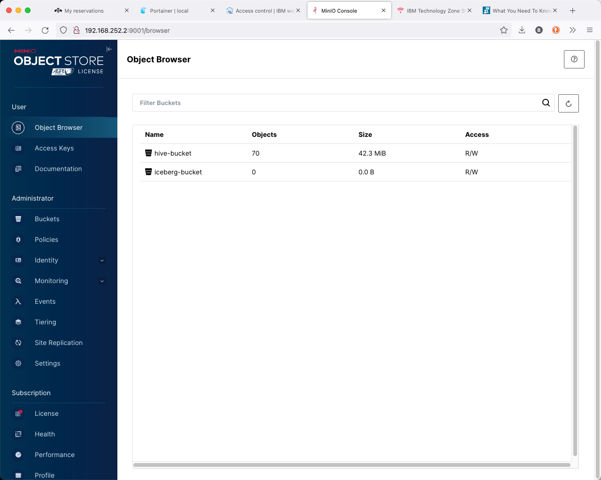
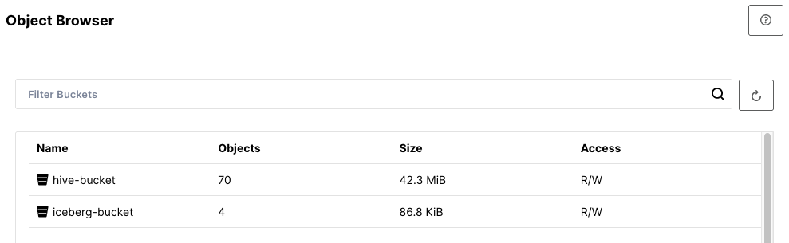
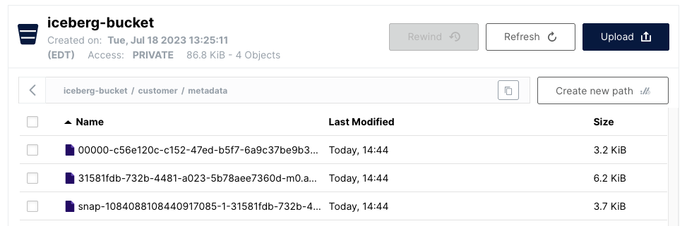

Using the MinIO console UI
MinIO is a high-performance, S3 compatible object store. Rather than connect to an external S3 object store, we are going to use MinIO locally to run with watsonx.data.
To connect to MinIO, you will need to extract the MinIO credentials by querying the docker container. You must be the root user to issue these commands.
export LH_S3_ACCESS_KEY=$(docker exec ibm-lh-presto printenv | grep LH_S3_ACCESS_KEY | sed 's/.*=//')
export LH_S3_SECRET_KEY=$(docker exec ibm-lh-presto printenv | grep LH_S3_SECRET_KEY | sed 's/.*=//')
echo "MinIO Userid : " $LH_S3_ACCESS_KEY
echo "MinIO Password: " $LH_S3_SECRET_KEY
MinIO Userid : c4643026087cc21989eb5c12 MinIO Password: 93da45c5af87abd86c9dbc83
You can get all passwords for the system when you are logged in as the watsonx user by using the following command.
cat /certs/passwords
Open your browser and navigate to:
- Minio console - http://region.techzone-server.com:port
- Note: Firefox on OSX occasionally freezes when connecting to the MinIO console. The Safari browser is much more reliable.

Login with object store credentials found above (These will be different for your system). You should see current buckets in MinIO.

We are going to examine these buckets after we populate them with some data.
Creating Schemas and Tables
Not all catalogs support creation of schemas - as an example, the TPCH catalog is not writeable. We will use the iceberg_data catalog for this exercise. We will need to get some details before we continue.
Make sure you are connected as the root user and are in the proper directory.
cd /root/ibm-lh-dev/bin
Login to the Presto CLI.
./presto-cli --catalog iceberg_data
workshop in catalogiceberg_data. Note how we are using the iceberg-bucket bucket which you should have seen in the MinIO object browser.
CREATE SCHEMA IF NOT EXISTS workshop with (location='s3a://iceberg-bucket/');
show schemas;
Schema ---------- workshop (1 row)
Use the workshop schema.
use workshop;
Creating tables
Create a new Apache Iceberg table using existing data in the sample Customer table as part of the TPCH catalog schema called TINY.
create table customer as select * from tpch.tiny.customer;
Show the tables.
show tables;
Table ---------- customer (1 row)
Quit Presto.
quit;

You should now see new objects under iceberg-bucket Click on the bucket name and you will see the customer table.

Selecting the customer object will show that there is data and metadata in there.
How do we know that this data is based on Apache iceberg? If you open the file under metadata, you should see metadata information for the data we are storing in parquet file format.

Do I really need Apache Iceberg?
YES, YOU DO! However, it is good to understand why? Metadata is also stored in the Parquet file format but only for the single parquet file. If we add more data/partitions, the data is split into multiple Parquet files, and we don’t have a mechanism to get the table to parquet files mapping. Run the following example to understand this better.
You need to get the access keys for MinIO before running the following lab. Make sure you are still connected as root.
export LH_S3_ACCESS_KEY=$(docker exec ibm-lh-presto printenv | grep LH_S3_ACCESS_KEY | sed 's/.*=//')
export LH_S3_SECRET_KEY=$(docker exec ibm-lh-presto printenv | grep LH_S3_SECRET_KEY | sed 's/.*=//')
./dev-sandbox.sh
Update the Python files to be executable (makes our commands more convenient).
chmod +x /scripts/*.py
List all files in the object store (MinIO).
/scripts/s3-inspect.py --host ibm-lh-minio-svc:9000 --accessKey $LH_S3_ACCESS_KEY --secretKey $LH_S3_SECRET_KEY --bucket iceberg-bucket
iceberg-bucket b'customer/data/e9536a5e-14a1-4823-98ed-cc22d6fc38db.parquet' 2023-06-06 14:31:47.778000+00:00 6737d7268fcb3eb459b675f27f716f48 75373 None iceberg-bucket b'customer/metadata/00000-e26c56e0-c4d7-4625-8b06-422429f6ba8d.metadata.json' 2023-06-06 14:31:48.629000+00:00 2e722c7dd83c1dd260a7e6c9503c0e04 3272 None iceberg-bucket b'customer/metadata/7cb074a4-3da7-4184-9db8-567383bb588a-m0.avro' 2023-06-06 14:31:48.401000+00:00 655a5568207cc399b8297f1488ef77e7 6342 None iceberg-bucket b'customer/metadata/snap-6143645832277262458-1-7cb074a4-3da7-4184-9db8-567383bb588a.avro' 2023-06-06 14:31:48.445000+00:00 0c3714299d43ae86a46eabdcaac1351e 3753 None
You can extract the string with the following command.
PARQUET=$(/scripts/s3-inspect.py --host ibm-lh-minio-svc:9000 --accessKey $LH_S3_ACCESS_KEY --secretKey $LH_S3_SECRET_KEY --bucket iceberg-bucket | grep -o -m 1 ".*'customer.*parquet" | sed -n "s/.*b'//p")
The file name that is retrieved is substituted into the next command. Note: The file name found in $PARQUET will be different on your system.
/scripts/s3-download.py --host ibm-lh-minio-svc:9000 --accessKey $LH_S3_ACCESS_KEY --secretKey $LH_S3_SECRET_KEY --bucket iceberg-bucket --srcFile $PARQUET --destFile /tmp/x.parquet
/scripts/describe-parquet.py /tmp/x.parquet
---------------------- metadata:created_by: num_columns: 8 num_rows: 1500 num_row_groups: 1 format_version: 1.0 serialized_size: 851 ---------------------- ---------------------- schema: custkey: int64 name: binary address: binary nationkey: int64 phone: binary acctbal: double mktsegment: binary comment: binary ---------------------- ---------------------- row group 0: num_columns: 8 num_rows: 1500 total_byte_size: 74555 ---------------------- ---------------------- row group 0, column 1: file_offset: 0 file_path: physical_type: BYTE_ARRAY num_values: 1500 path_in_schema: name is_stats_set: True statistics: has_min_max: False min: None max: None null_count: 0 distinct_count: 0 num_values: 1500 physical_type: BYTE_ARRAY logical_type: None converted_type (legacy): NONE compression: GZIP encodings: ('DELTA_BYTE_ARRAY',) has_dictionary_page: False dictionary_page_offset: None data_page_offset: 112 total_compressed_size: 599 total_uncompressed_size: 2806 ----------------------
Note: In this instance we used an insert into select * from customer with no partitioning defined there was only 1 parquet file and only 1 row group. This is not the norm, and we deliberately did this to show you the value of using Apache Iceberg file format which can be used by multiple runtimes to access Iceberg data stored in parquet format and managed by hive metastore.
Exit from the Sandbox.
exit
MinIO CLI
The MinIO Client mc command line tool provides an alternative to UNIX commands like ls, cat, cp, mirror, and diff with support for both file systems and Amazon S3-compatible cloud storage services.
The mc commandline tool is built for compatibility with the AWS S3 API and is tested with MinIO and AWS S3 for expected functionality and behavior. Complete details and restrictions around the use of the CLI command can be found on the MinIO Client page.
You can use the MinIO CLI from a variety of clients. The MinIO ports are open in the developer edition image, which provides an alternative to loading data directly from your workstation rather than using the MinIO UI interface.
Minio System Alias
Before running commands against the MinIO server, an alias must be created that includes the access and secret key. The values can be extracted from the system by listing the contents of the /certs/passwords file or by running the passwords command as the root user.
cat /certs/passwords
The values for the MinIO access and secret key can also be exported with the following code:
export LH_S3_ACCESS_KEY=$(docker exec ibm-lh-presto printenv | grep LH_S3_ACCESS_KEY | sed 's/.*=//')
export LH_S3_SECRET_KEY=$(docker exec ibm-lh-presto printenv | grep LH_S3_SECRET_KEY | sed 's/.*=//')
echo "MinIO Userid : " $LH_S3_ACCESS_KEY
echo "MinIO Password: " $LH_S3_SECRET_KEY
The alias command has the following syntax:
mc alias set alias-name hostname:port access_key secret_key
For a local connection, we will use the following values:
- Alias Name -
watsonxdata - Hostname –
watsonxdata - Port –
9000 - Access Key –
$LH_S3_ACCESS_KEY - Secret Key -
$LH_S3_SECRET_KEY
If you are using an external client to connect to the MinIO service, you will need the URL and Port number from the TechZone reservation. The access key and secret key will be the same values that are found above.
- Hostname –
region.techzone-server.com - Port –
12345
The alias for local access is found below.
mc alias set watsonxdata http://watsonxdata:9000 $LH_S3_ACCESS_KEY $LH_S3_SECRET_KEY
Added `watsonxdata` successfully.
List Buckets
The mc command provides us with a number of commands that allows us to manage buckets and files within them. The following command checks to see what buckets currently exist in the system.
mc ls tree watsonxdata
[2023-09-29 14:38:19 EDT] 0B hive-bucket/ [2023-09-29 14:38:19 EDT] 0B iceberg-bucket/
You can view the contents of a bucket by traversing down the path.
mc ls tree watsonxdata/hive-bucket
[2023-10-13 10:34:36 EDT] 0B gosalesdw/ [2023-10-13 10:34:36 EDT] 0B hive_sql/ [2023-10-13 10:34:36 EDT] 0B ontime/ [2023-10-13 10:34:36 EDT] 0B taxi/
Create a Bucket
At this point we will create a new bucket to hold some data. Use the mb (make bucket) command. The command requires the alias name for the MinIO connection followed by the name of the bucket.
mc mb alias-name/new-bucket
The following code will create a new bucket in the system called sampledata.
mc mb watsonxdata/sampledata
Bucket created successfully `watsonxdata/sampledata`.
We can double check that the bucket it there.
mc ls tree watsonxdata
[2023-09-29 14:38:19 EDT] 0B hive-bucket/ [2023-09-29 14:38:19 EDT] 0B iceberg-bucket/ [2023-10-13 10:39:47 EDT] 0B sampledata/
Loading Data
One of the most powerful features of the MinIO CLI is its ability to load data directory from your workstation into the bucket, rather than having to use the MinIO UI. It is also significantly faster than using the UI interface.
The next example will load data into the bucket that was just created. The directory that we will be using to load data from is called /sampledata and found in the root directory of the watsonx.data server.
ls /sampledata/csv
gosales ontime taxi
Next we will load the data from each one of these directories into the sampledata bucket. The mc command allows you to select which files to place into a bucket, or an entire directory with recursion. In this case we are loading all three directories the files into the bucket. Note the use of the
/ at the end of the directory name to prevent the directory name csv from being used as the high-level directory name in the target bucket.
mc cp --recursive /sampledata/csv/ watsonxdata/sampledata/
...data/csv/taxi/taxi.csv: 306.16 MiB / 306.16 MiB ━━━━━━━━━━━━━━━━━━ 147.91 MiB/s 2s
We can double-check that our files are there with the --files option:
mc tree --files watsonxdata/sampledata/
watsonxdata/sampledata/ ├─ gosales │ ├─ DIST_INVENTORY_FACT.csv │ ├─ DIST_PRODUCT_FORECAST_FACT.csv │ ├─ DIST_RETURNED_ITEMS_FACT.csv │ ├─ DIST_RETURN_REASON_DIM.csv .... │ ├─ EMP_EMPLOYEE_DIM.csv │ ├─ SLS_SALES_TARG_FACT.csv │ ├─ gosales_createtable.sql │ └─ gosales_load_postgres.sql ├─ ontime │ ├─ aircraft.csv │ ├─ airline_id.csv │ ├─ airport_id.csv │ ├─ cancellation.csv │ └─ ontime.csv └─ taxi └─ taxi.csv
Delete a File or Bucket
Use the rb (Remove bucket) command to remove a bucket and its contents. You can remove individual objects by using the rm (Remove) command by fully qualifying the object. The next command will remove the ontime.csv file from the ontime folder.
mc rm watsonxdata/sampledata/ontime/ontime.csv
Removed `watsonxdata/sampledata/ontime/ontime.csv`.
The delete bucket command will fail if you still have data in the bucket.
mc rb watsonxdata/sampledata
mc:`watsonxdata/sampledata` is not empty. Retry this command with ‘--force’ flag if you want to remove `watsonxdata/sampledata` and all its contents
Adding the --force option will remove the bucket and all the data in it. Use with caution!
mc rb --force watsonxdata/sampledata
Removed `watsonxdata/sampledata` successfully.